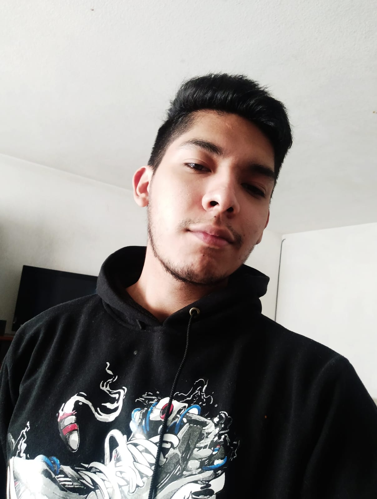

Curriculum Vitae

Contact
- Iztapalapa, Mexico City, Mexico.
- + 52 55 6085 4413
- Email: theshard4ic@gmail.com
Education
- Currently studying Computer Engineering at National Autonomous University of Mexico
- Certificate of completion in HTML, CSS, and JavaScript at the Facultad de Ingeniería.
Working experience
- (2024 - present time) Working as an operative personal at massive events.
Mainly focusing on Customer Service and Security.
- (2024 - present time) Working at the National Institute for Adults Education (INEA).
- Attention, dissemination, and monitoring of the INEA service in Iztapalapa Centro district at Mexico City
- Providing tutoring and classes of elementary and middle school education to adults.
Skills
- Fast learner
- Disciplined
- Communication to a crowd
- Web development (front-end)
- Solving problems
Languages
- English: intermediate (B2)
- Portuguese: intermediate (B1)
My hobbies:
Exercising (not too frequently these days)
Listening to music, like synphonic metal, pop or urban music.
Practicing different languages and memorizing songs' lyrics
Taking care of myself
Chatting with friends
Playing some mobile videogames
Reading
Courses
- Certificate of completion in HTML, CSS, and JavaScript at the Facultad de Ingeniería.